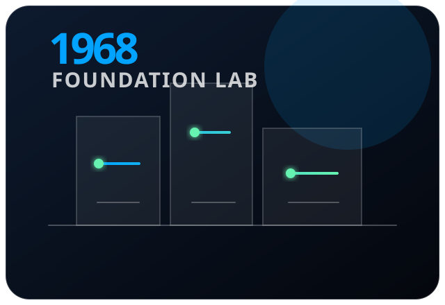
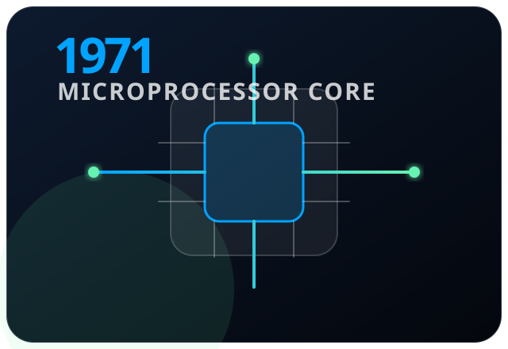
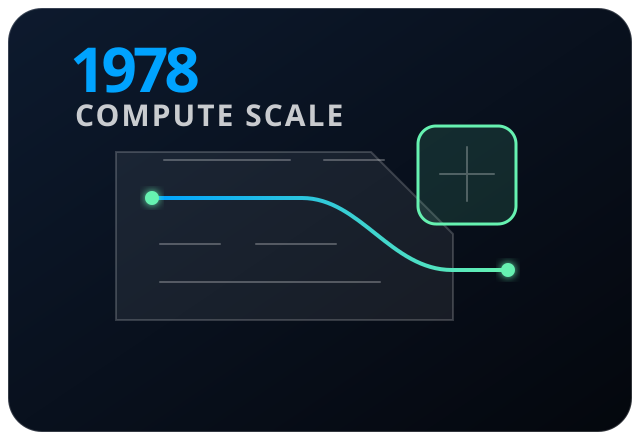
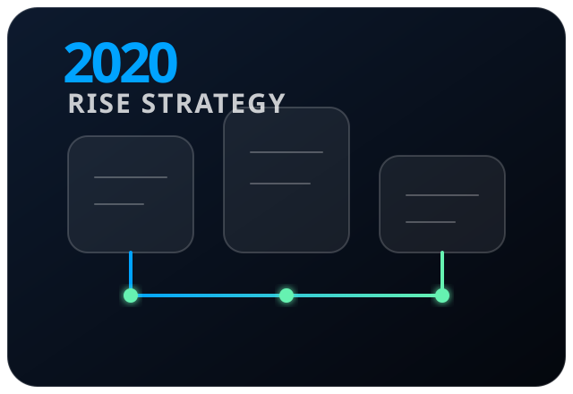
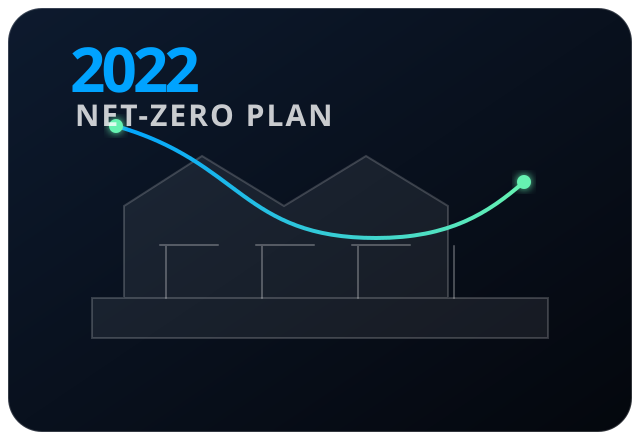
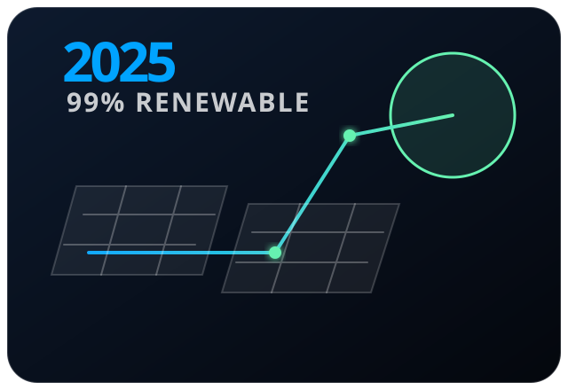
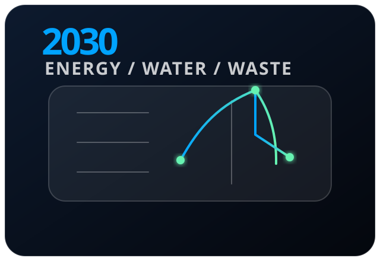
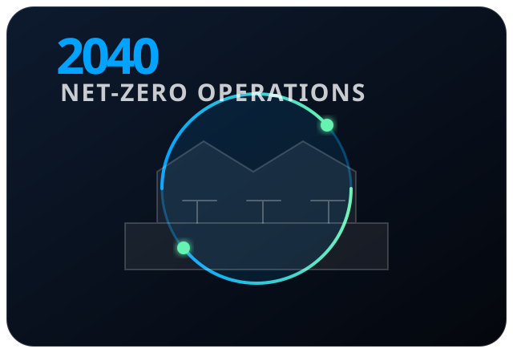

FoundationNode 01

1968
Intel Founded
Intel begins as a semiconductor company focused on memory and integrated circuits.
This starting point frames the timeline: smaller and faster chips eventually connect technical progress with operational responsibility.
ComputeNode 02

1971
First Microprocessor
The Intel 4004 helps launch the microprocessor era.
More computing power moved into smaller forms, creating a long-term design challenge: improving performance while managing energy demand.
ScaleNode 03

1978
8086 Processor
The 8086 processor becomes a key milestone in personal computing history.
As computing scaled toward everyday use, the environmental impact of manufacturing, electricity, water, and waste became more important.
RISENode 04

2020
RISE 2030 Strategy
Intel introduces its RISE strategy and 2030 goals.
RISE connects responsibility, inclusion, and sustainability, turning corporate responsibility into measurable long-term targets.
ClimateNode 05

2022
Net-Zero Roadmap
Intel commits to net-zero Scope 1 and 2 greenhouse gas emissions by 2040.
The plan emphasizes direct emissions reduction first, supported by renewable electricity, energy conservation, and lower-carbon operations.
EnergyNode 06

2025
Renewable Progress
Intel reports 99% global renewable electricity progress in 2025.
This milestone shows sustainability as an operational metric that can be tracked through energy sourcing, facilities, and regional progress.
2030 TargetsNode 07

2030
Operational Goals
Intel aims for 100% renewable electricity, net positive water, and zero waste to landfill.
The 2030 targets connect environmental responsibility to measurable outcomes across energy, water stewardship, and circular manufacturing.
Future StateNode 08

2040
Net-Zero Operations
Intel targets net-zero Scope 1 and 2 greenhouse gas emissions across global operations.
The final node turns the timeline toward accountability: innovation is strongest when performance, scale, and environmental impact improve together.